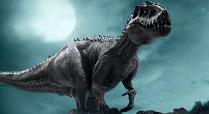

Indominos Rex

À primeira vista, o Indominus Rex se assemelha mais a um T. Rex. Mas o ornamento distinto de sua cabeça e osteodermos ósseos ultra-resistentes podem ser identificados da espécie Abelisaurs. O rugido do Indominus é estimado em 140-160 dB - o mesmo que o da decolagem de um 747.